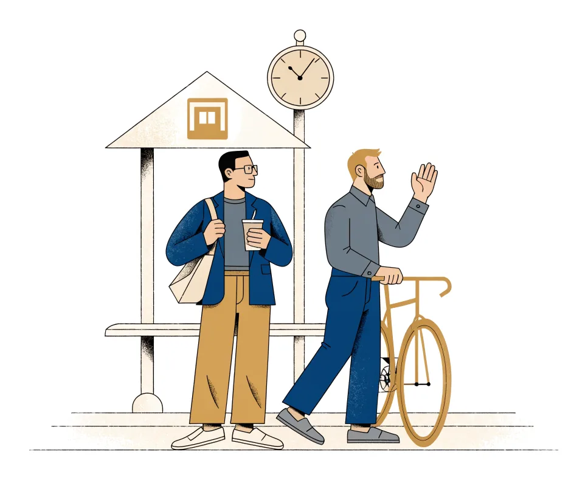
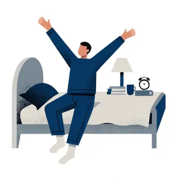
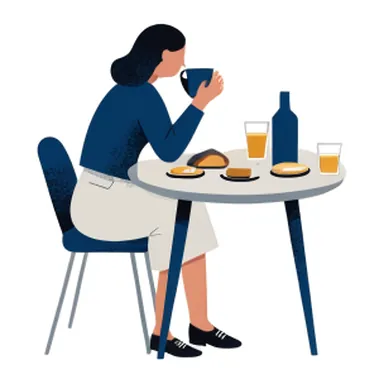
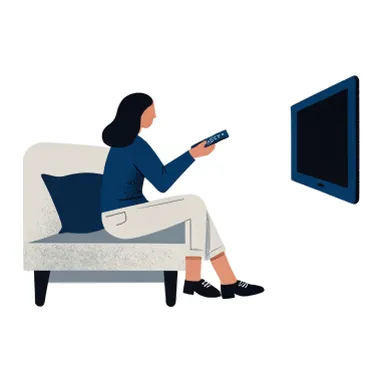
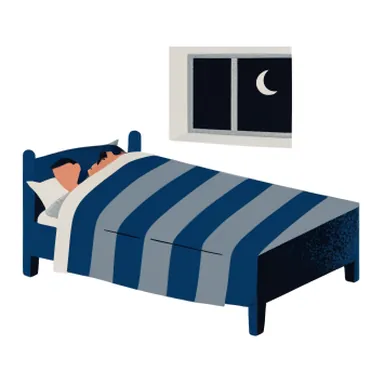

배우기 전에 먼저 해 보세요. 틀려도 괜찮아요.
halb neun은 몇 시일까요?
halb는 다가오는 시각의 30분 전이에요.
'저는 여섯 시에 일어나요'는 어떻게 말할까요?
aufstehen은 둘로 갈라져서 auf가 문장 끝으로 가요.

독일 생활이 자리를 잡으면 하루와 한 주가 일정하게 돌아가요. Dohyun은 출근길에, Jiu는 아침 식탁에서, Sora는 딸의 학교에서 시각과 일과를 이야기해요.
문법 Uhrzeit, trennbare Verben (aufstehen, anfangen), Verben mit Vokalwechsel (fahren, essen, schlafen)
과제대학수업 시간표를 보며 한 주 설명하기
과제직장근무 시간과 하루 업무 설명하기
이 과를 마치면 시각을 말하고, 하루 일과와 한 주의 계획을 설명할 수 있어요.
이 과에서 쓸 말이에요. 눌러서 먼저 들어 보세요.
배우기 전에 먼저 해 보세요. 틀려도 괜찮아요.
halb neun은 몇 시일까요?
halb는 다가오는 시각의 30분 전이에요.
'저는 여섯 시에 일어나요'는 어떻게 말할까요?
aufstehen은 둘로 갈라져서 auf가 문장 끝으로 가요.
Lektion 4의 낱말 다섯 개를 다시 떠올려 보세요.
아침 여덟 시, 회사 앞 정류장이에요. Dohyun과 Markus가 출근길에 만나요.
들으면서 찾아보세요. Dohyun은 몇 시에 일어나나요?
일요일 아침, WG 부엌이에요. Lena가 Jiu에게 이번 주 계획을 물어요.
들으면서 찾아보세요. Jiu의 독일어 수업은 몇 시에 끝나나요?
Hana의 학교 사무실이에요. Sora가 수업 시간과 돌봄 시간을 물어요.
들으면서 찾아보세요. 오후 돌봄은 몇 시에 끝나나요?
세 대화를 듣고 답하세요.
Dohyun은 몇 시에 일어나나요?
Dohyun frühstückt um Viertel nach sieben.
Markus와 Dohyun의 회의는 몇 시에 시작하나요?
Jiu의 독일어 수업은 몇 시에 끝나나요?
Viertel vor eins는 1시가 되기 15분 전, 곧 12시 45분이에요.
Am Samstag kauft Jiu ein.
Der Film fängt um neun an.
영화는 여덟 시에 시작해요.
학교의 오후 돌봄은 몇 시에 끝나나요?
Hana isst kein Fleisch.
낱말 40개예요. 낱말이나 예문 앞의 단추를 누르면 소리가 나요. 명사는 der, die, das를 색으로 구분했어요.
der Morgen 아침
Am Morgen lerne ich Deutsch.아침에 독일어를 공부해요.
der Vormittag, die Vormittage 오전
Am Vormittag habe ich Unterricht.오전에 수업이 있어요.
der Mittag 정오, 점심때
Am Mittag esse ich in der Kantine.점심때는 회사 식당에서 먹어요.
der Nachmittag, die Nachmittage 오후
Am Nachmittag kaufe ich ein.오후에 장을 봐요.
der Abend, die Abende 저녁
Am Abend sehe ich fern.저녁에 텔레비전을 봐요.
die Nacht, die Nächte 밤
In der Nacht schlafe ich.밤에는 자요.
der Tag, die Tage 날, 하루
Mein Tag fängt früh an.제 하루는 일찍 시작해요.
die Woche, die Wochen 주
Die Woche hat sieben Tage.한 주는 7일이에요.
das Wochenende, die Wochenenden 주말
Am Wochenende schlafe ich lange.주말에는 늦게까지 자요.
die Uhr, die Uhren 시계, ~시
Es ist neun Uhr.아홉 시예요.
die Stunde, die Stunden 시간 (60분)
Ich lerne eine Stunde Deutsch.저는 한 시간 동안 독일어를 공부해요.

aufstehen 일어나다
Ich stehe um sechs Uhr auf.저는 여섯 시에 일어나요.

frühstücken 아침을 먹다
Wann frühstückst du?아침은 언제 먹어요?
anfangen (du fängst an, er fängt an) 시작하다
Der Kurs fängt um neun an.수업은 아홉 시에 시작해요.
fahren (du fährst, er fährt) 타고 가다
Dohyun fährt ins Büro.Dohyun은 사무실로 가요.
gehen 가다
Wir gehen ins Kino.우리는 영화 보러 가요.
einkaufen 장을 보다
Am Samstag kaufe ich ein.토요일에 장을 봐요.
kochen 요리하다
Am Abend koche ich.저녁에 요리해요.

fernsehen (du siehst fern, er sieht fern) 텔레비전을 보다
Lena sieht am Abend fern.Lena는 저녁에 텔레비전을 봐요.
anrufen 전화하다
Ich rufe meine Eltern an.부모님께 전화해요.

schlafen (du schläfst, er schläft) 자다
Meine Tochter schläft lange.제 딸은 오래 자요.
lesen (du liest, er liest) 읽다
Markus liest E-Mails.Markus는 이메일을 읽어요.
mitkommen 같이 가다
Kommst du mit?같이 갈래요?
machen 하다
Was machst du am Samstag?토요일에 뭐 해요?
die Arbeit 일, 직장
Die Arbeit fängt um halb neun an.일은 여덟 시 반에 시작해요.
die Pause, die Pausen 쉬는 시간
Um zwölf machen wir Pause.열두 시에 쉬어요.
die Besprechung, die Besprechungen 회의
Die Besprechung ist um zehn Uhr.회의는 열 시예요.
der Unterricht 수업
Der Unterricht ist um halb eins zu Ende.수업은 열두 시 반에 끝나요.
wann 언제
Wann fängt der Film an?영화는 언제 시작해요?
um ~시에
Ich komme um acht Uhr.저는 여덟 시에 와요.
bis ~까지
Ich arbeite von neun bis fünf.저는 아홉 시부터 다섯 시까지 일해요.
früh 일찍
Dohyun steht früh auf.Dohyun은 일찍 일어나요.
spät 늦은, 늦게
Wie spät ist es?몇 시예요?
lange 오래
Am Sonntag schlafe ich lange.일요일에는 늦게까지 자요.
immer 항상
Ich frühstücke immer um sieben.저는 항상 일곱 시에 아침을 먹어요.
oft 자주
Wir essen oft zusammen.우리는 자주 함께 먹어요.
manchmal 가끔
Manchmal koche ich am Abend.가끔 저녁에 요리해요.
nie 전혀 ~ 않다
Ich sehe nie fern.저는 텔레비전을 전혀 안 봐요.
dann 그다음에
Dann fahre ich ins Büro.그다음에 사무실로 가요.
morgen 내일
Morgen arbeite ich nicht.내일은 일하지 않아요.
이 과의 낱말로 여덟 문제를 풀어요.
줄을 누르면 소리가 나요. 요일 앞에는 am을 써요. am Montag은 '월요일에'예요. 요일은 모두 남성 명사예요.
줄을 누르면 소리가 나요. 앞의 세 줄은 친구나 동료와 말할 때, 마지막 줄은 시간표와 예약에서 쓰는 방식이에요.
규칙
지금 시각은 Es ist …로 말하고, 무엇을 하는 시각은 앞에 um을 붙여요. 15분은 Viertel, 30분은 halb예요. nach는 '지나서', vor는 '전'이에요. halb 뒤에는 다가오는 시각을 말해요.
| 시각 | 일상에서 | 시간표와 예약에서 |
|---|---|---|
| 8:00 | acht Uhr | acht Uhr |
| 8:15 | Viertel nach acht | acht Uhr fünfzehn |
| 8:30 | halb neun | acht Uhr dreißig |
| 8:45 | Viertel vor neun | acht Uhr fünfundvierzig |
| 20:30 | halb neun | zwanzig Uhr dreißig |
주의 halb neun은 9시 반이 아니라 8시 반이에요. 약속을 정할 때 가장 많이 틀리는 표현이에요. 요일과 하루의 때에는 am을 써요. am Montag, am Abend.
규칙을 보고 바로 확인해 보세요.
halb neun은 몇 시일까요?
규칙
aufstehen, anfangen, einkaufen, fernsehen, anrufen, mitkommen은 앞부분이 떨어지는 동사예요. 동사의 몸통은 두 번째 자리에서 주어에 맞게 바뀌고, 앞부분은 문장 맨 끝으로 가요.
| 1 | 2 동사 | 가운데 | 끝 |
|---|---|---|---|
| Ich | stehe | um sechs | auf. |
| Der Film | fängt | um acht | an. |
| Am Samstag | kaufe | ich | ein. |
| Jiu | ruft | ihre Eltern | an. |
| Wann | kommst | du | mit? |
주의 때를 나타내는 말이 맨 앞에 오면 주어가 동사 뒤로 가요. Am Samstag kaufe ich ein. 동사는 언제나 두 번째 자리예요. 독일어 문장은 끝까지 들어야 뜻을 알 수 있어요.
규칙을 보고 바로 확인해 보세요.
aufstehen의 auf는 문장에서 어디로 가나요?
규칙
몇몇 동사는 du와 er, sie에서만 어간의 모음이 바뀌어요. a는 ä로, e는 i나 ie로 바뀌어요. ich, wir, ihr, sie, Sie에서는 바뀌지 않아요.
| fahren | essen | sehen | |
|---|---|---|---|
| ich | fahre | esse | sehe |
| du | fährst | isst | siehst |
| er, sie | fährt | isst | sieht |
| wir | fahren | essen | sehen |
주의 schlafen은 fahren처럼 a가 ä로 바뀌어서 du schläfst, er schläft가 돼요. 2과의 sprechen(du sprichst)과 4과의 nehmen(du nimmst)도 같은 종류예요. anfangen과 fernsehen은 갈라지면서 모음도 바뀌어요. Der Kurs fängt an. Lena sieht fern. 낱말 목록에는 이런 동사 옆에 du와 er의 모양이 함께 적혀 있어요.
규칙을 보고 바로 확인해 보세요.
모음이 바뀌는 것은 주어가 무엇일 때인가요?
시각을 듣고 알맞은 것을 고르세요.
몇 시인가요?
Es ist halb acht.
몇 시인가요?
Es ist Viertel vor neun.
몇 시인가요?
Es ist zehn nach sechs.
버스는 몇 시에 떠나나요?
Der Bus fährt um sechzehn Uhr dreißig.
Sora가 자기 하루를 이야기해요. 듣고 알맞은 것을 고르세요.
Soras Tag
Sora Ich stehe um halb sieben auf. Dann frühstücke ich mit Hana und Minho.
Sora Um Viertel vor acht fährt Hana in die Schule. Mein Deutschkurs fängt um neun an.
Sora Am Nachmittag kaufe ich ein und koche. Am Abend sehen wir zusammen fern.
Sora는 몇 시에 일어나나요?
Sora의 독일어 수업은 몇 시에 시작하나요?
Sora는 오후에 무엇을 하나요?
Jiu의 주간 계획표를 읽고, 맞으면 richtig, 틀리면 falsch를 고르세요. Mo, Di, Mi, Do, Fr는 요일을 줄여 쓴 것이에요.
Jius Woche
| Vormittag | Nachmittag | Abend | |
|---|---|---|---|
| Mo | Deutschkurs | Bibliothek | kochen |
| Di | Deutschkurs | einkaufen | lesen |
| Mi | Deutschkurs | Bibliothek | fernsehen |
| Do | Deutschkurs | Sport | lernen |
| Fr | Deutschkurs | frei | Kino |
Am Montag kocht Jiu am Abend.
Am Dienstag kauft Jiu am Vormittag ein.
장은 화요일 오후(Nachmittag)에 봐요.
Am Mittwoch sieht Jiu am Abend fern.
Am Donnerstag hat Jiu keinen Deutschkurs.
월요일부터 금요일까지 오전마다 Deutschkurs가 있어요.
Am Freitag geht Jiu am Abend ins Kino.
분리동사의 떨어지는 부분을 고르세요.
Ich stehe um sechs Uhr .
Der Film fängt um acht .
Am Samstag kaufe ich .
Am Abend sehen wir .
Jiu ruft ihre Eltern .
Wir gehen ins Kino. Kommst du ?
알맞은 동사 형태를 고르세요.
Dohyun ins Büro.
Hana kein Fleisch.
Wann du an?
Meine Tochter lange.
Lena am Abend fern.
Wir um zwölf.
낱말을 순서대로 눌러 문장을 만드세요.
저는 일곱 시에 일어나요.
수업은 언제 시작해요?
토요일에 저는 장을 봐요.
Jiu는 부모님께 전화해요.
시각을 일상에서 말하는 방식으로 쓰세요.
7:30 = halb
9:15 = Viertel neun
10:45 = Viertel elf
12:30 = eins
줄임말과 요일을 짝지으세요.
듣고 그대로 써 보세요.
Ich stehe um sechs Uhr auf. 저는 여섯 시에 일어나요.
Der Kurs fängt um neun an. 수업은 아홉 시에 시작해요.
Was machst du am Samstag? 토요일에 뭐 해요?
Wie spät ist es? 몇 시예요?
Es ist halb neun. 여덟 시 반이에요.
Wann fängt der Kurs an? 수업은 언제 시작해요?
Um neun Uhr. 아홉 시에요.
Ich stehe um … auf. 저는 …시에 일어나요.
Um … frühstücke ich. …시에 아침을 먹어요.
Dann fahre ich ins Büro. 그다음에 사무실로 가요.
Am Abend sehe ich fern. 저녁에는 텔레비전을 봐요.
Ich arbeite von neun bis fünf. 저는 아홉 시부터 다섯 시까지 일해요.
Der Kurs ist von Montag bis Freitag. 수업은 월요일부터 금요일까지예요.
Am Montag habe ich … 월요일에는 …이 있어요.
Am Wochenende schlafe ich lange. 주말에는 늦게까지 자요.
Was machst du am Samstag? 토요일에 뭐 해요?
immer 항상
oft 자주
manchmal 가끔
nie 전혀
과제 고르기
역할 대화와 말하기, 쓰기 과제는 대학 생활과 직장 생활 두 가지예요. 하나를 고르면 다음 과에서도 그쪽 과제가 나와요. 언제든 바꿀 수 있어요.
대화 B에서 역할을 하나 고르세요. 상대의 말은 음성으로 나오고, 내 차례에는 직접 말해요.
대화 A에서 역할을 하나 고르세요. 상대의 말은 음성으로 나오고, 내 차례에는 직접 말해요.
내 하루를 떠올리고 칸을 채우세요. 시각은 sieben, halb acht처럼 독일어로 적어요. 마지막 칸에는 koche ich, sehe ich fern처럼 동사를 먼저 쓰고 ich를 써요. 완성된 문장을 소리 내어 읽어 보세요.
Ich stehe um halb sieben auf.
Um sieben frühstücke ich.
Mein Tag fängt um neun an.
Am Abend koche ich.
Meine Woche
내 수업 시간표를 떠올리며 한 주를 설명하는 글을 써 보세요. 다섯 문장이면 충분해요. 지금 수업이 없으면 Jiu의 주간 계획표를 보고 써도 좋아요.
Von Montag bis Freitag habe ich Deutschkurs. Der Kurs fängt um neun Uhr an und ist um Viertel vor eins zu Ende. Am Nachmittag lerne ich in der Bibliothek. Am Dienstag kaufe ich ein. Am Wochenende schlafe ich lange und rufe meine Eltern an.
다 쓴 뒤에 확인해 보세요.
같이 사는 Lena가 내 한 주에 대해 물어요. 질문을 듣고 내 이야기로 답하세요. 예시 답은 참고만 하세요.
Wann hast du Unterricht? 수업은 언제 있어요?
Von Montag bis Freitag, von neun bis Viertel vor eins.
Wann stehst du auf? 몇 시에 일어나요?
Ich stehe um sieben Uhr auf.
Was machst du am Nachmittag? 오후에는 뭐 해요?
Am Nachmittag lerne ich in der Bibliothek.
Und was machst du am Wochenende? 주말에는 뭐 해요?
Am Samstag kaufe ich ein. Am Sonntag schlafe ich lange.
Mein Arbeitstag
새로 온 동료에게 내 근무 시간과 하루 일과를 설명하는 글을 써 보세요. 다섯 문장이면 충분해요.
Ich arbeite von halb neun bis fünf. Am Vormittag lese ich E-Mails. Um zwölf Uhr mache ich Pause und esse in der Kantine. Am Dienstag haben wir um zehn Uhr eine Besprechung. Am Abend lerne ich Deutsch.
다 쓴 뒤에 확인해 보세요.
동료 Frau Schulz가 근무 시간을 물어요. 아직 Sie를 쓰는 사이예요. 질문을 듣고 내 이야기로 답하세요. 예시 답은 참고만 하세요.
Wann fangen Sie am Morgen an? 아침에 몇 시에 시작하세요?
Ich fange um halb neun an.
Und bis wann arbeiten Sie? 그럼 몇 시까지 일하세요?
Ich arbeite bis fünf Uhr.
Wann machen Sie Mittagspause? 점심은 언제 드세요?
Um zwölf Uhr. Ich esse in der Kantine.
Wann ist die Besprechung am Dienstag? 화요일 회의는 언제예요?
Die Besprechung fängt um zehn Uhr an.
Ich kann die Uhrzeit sagen und verstehen.시각을 말하고 알아들을 수 있어요.
Ich kann meinen Tag beschreiben.내 하루 일과를 설명할 수 있어요.
Ich kann über meine Woche sprechen.한 주의 계획을 요일별로 말할 수 있어요.
Ich kann trennbare Verben im Satz benutzen.분리동사를 문장에서 쓸 수 있어요.